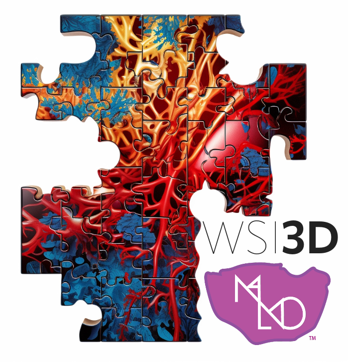
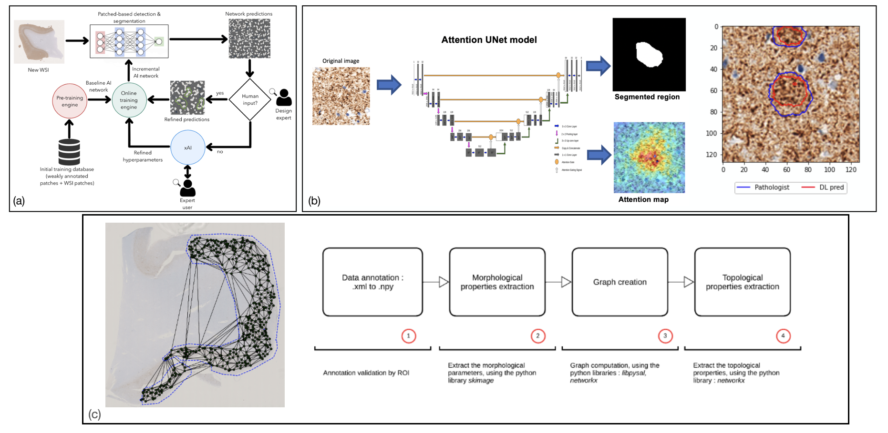

Selected Projects
PhagoStat: Phagocytosis Unveiled
A scalable and interpretable deep learning framework for neurodegenerative disease analysis, focusing on phagocytosis-related mechanisms and biomedical image interpretation.

MALMO: Mathematical Approaches to Modelling Metabolic Plasticity and Heterogeneity in Melanoma
A collaborative project combining mathematical modelling, artificial intelligence and biomedical data analysis to better understand metabolic plasticity and heterogeneity in melanoma.

Visual Deep Learning-Based Explanation for Neuritic Plaques Segmentation in Alzheimer’s Disease
A weakly supervised deep learning approach for whole-slide histopathological images, focusing on explainable segmentation of neuritic plaques in Alzheimer’s disease.

STRATIFIAD: Refining Alzheimer’s Disease Patient Stratification
A computational histopathology project using explainable artificial intelligence to improve the stratification of Alzheimer’s disease patients from tissue-level features.
